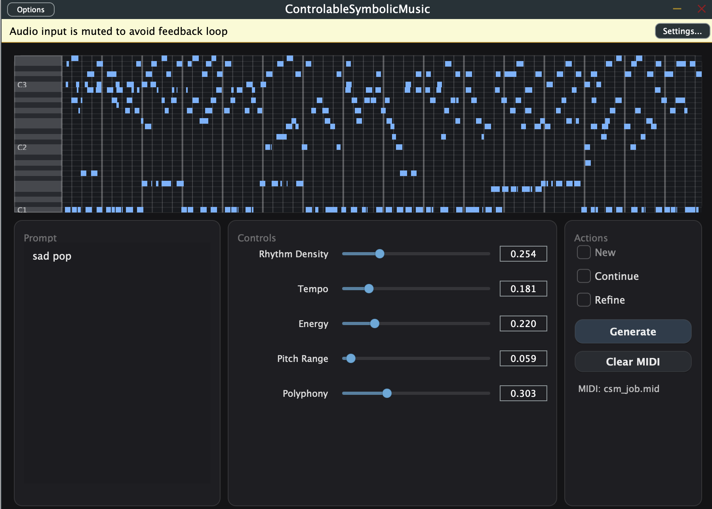
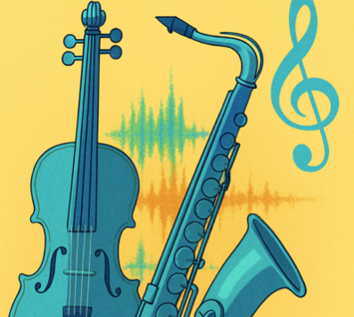
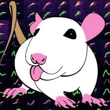
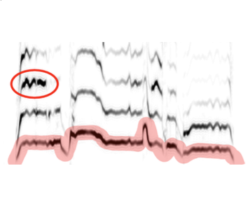
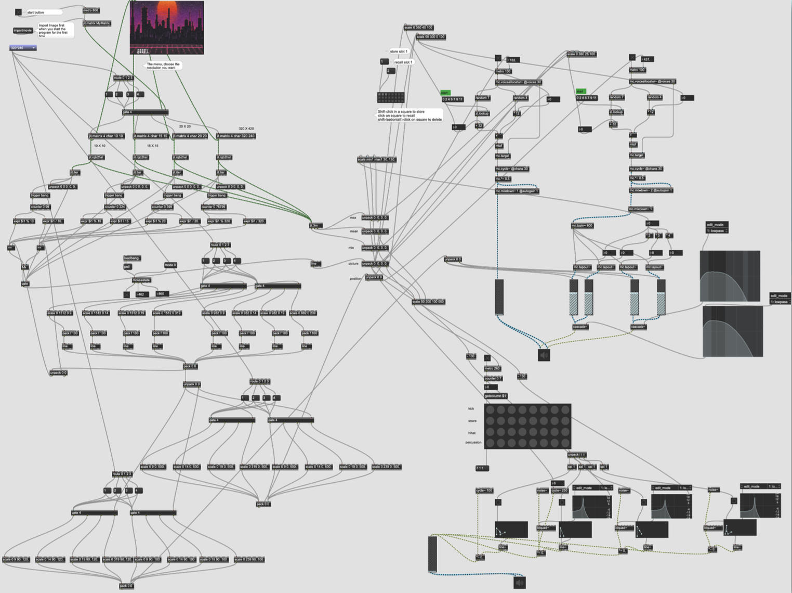
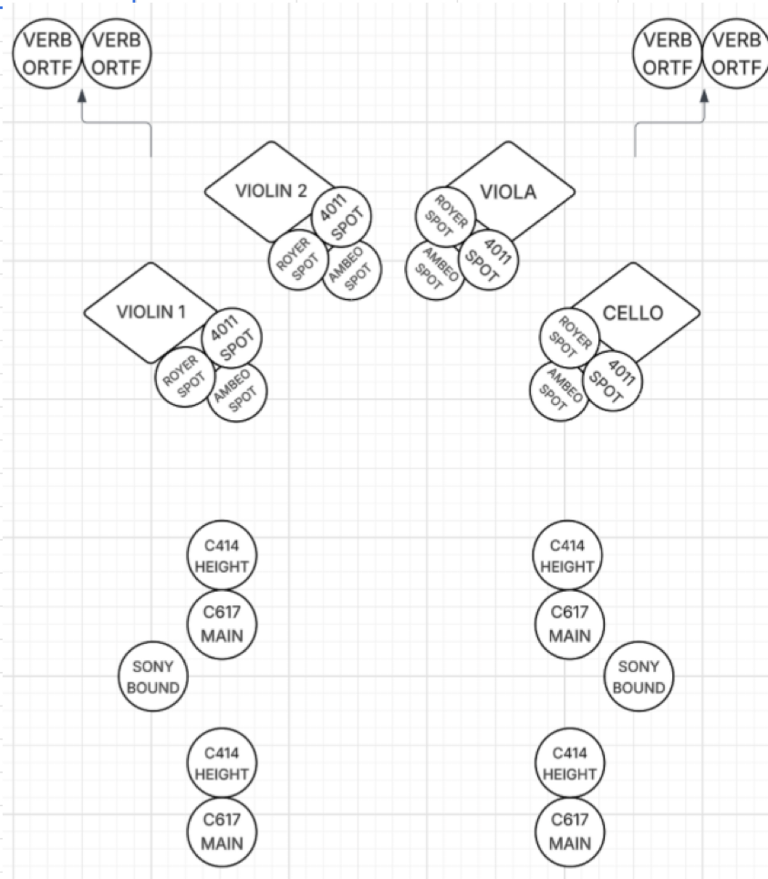
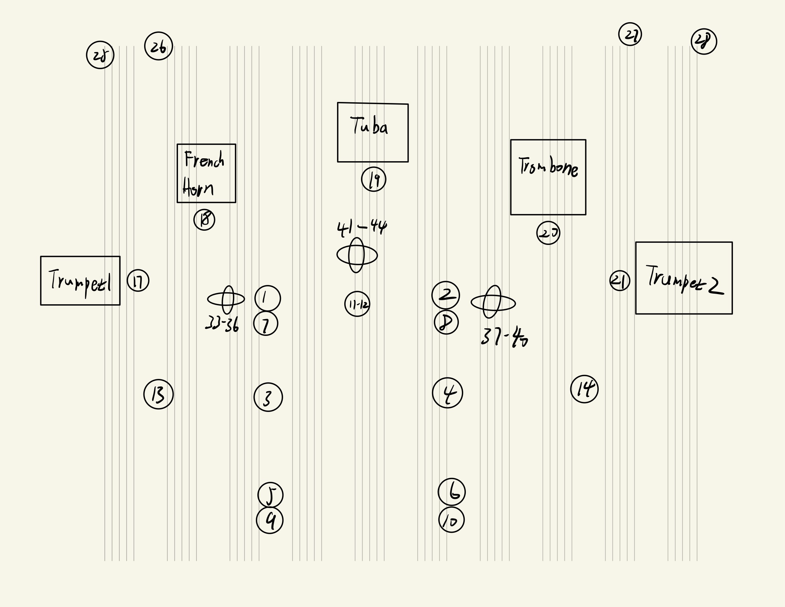
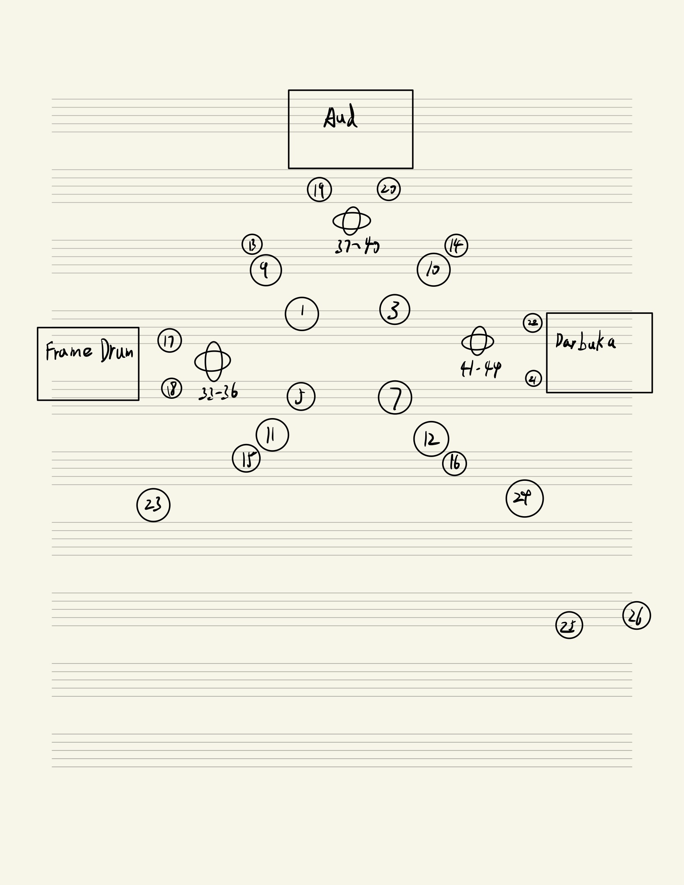

Zixuan Guo

Music technologist, vocalist, bassist, and AI researcher.
Building intelligent tools that extend musicians' creativity.
About Me
I am a Music Technology researcher, pop vocalist, electric bassist, and music producer. My research explores DSP and machine learning for music and audio, particularly Music Information Retrieval (MIR), symbolic music generation, and music understanding.
Currently, I am pursuing an MM in Music Technology at NYU. My goal is to design interactive and controllable AI systems that extend musicians' creativity and integrate naturally into real-world production workflows.
Projects
These projects represent my ongoing and completed work across AI music systems, music technology research, and audio engineering. They reflect my focus on building intelligent, interactive tools that bridge musicianship and computational creativity.
-
🎼 Controllable Symbolic Music GeneratorA controllable symbolic music generation system designed for DAW-integrated workflows, supporting segment-by-segment interaction and structure-first composition. It features a hybrid architecture that combines Transformer and Diffusion models to give musicians fine-grained creative control over the generation process, and supports prompt-based generation of multi-track musical ideas conditioned on user-specified musical attributes.
-
🥁 Noise-Robust Musical Instrument ClassificationA noise-robust musical instrument classification system designed for real-world acoustic conditions. The project integrates curriculum learning, SNR-aware ensemble modeling, and a harmonic-enhanced fallback mechanism to ensure stable performance under heavy noise, achieving significantly improved reliability in practical audio environments.
-
🐭 DeepSqueak ML Pipeline ModernizationA modernization of the DeepSqueak ultrasonic vocalization analysis system, replacing its legacy workflow with a scalable, modular machine learning pipeline. The project strengthens model reliability through noise-augmented training and carefully curated negative samples to improve discrimination in low-SNR environments.
-
🎵 Pitch Tracking in Non-Ideal ConditionsA comprehensive benchmark study investigating how state-of-the-art pitch tracking methods perform under non-ideal conditions. The project evaluates models including Crepe and Basic Pitch using MIR datasets, with synthesized perturbations such as tuning variations, vocal distortion, and ambient noise to address data scarcity. Includes optional fine-tuning of Crepe to improve robustness.
-
🎨 Interactive Music Generation via Image-Based Audio Parameter MappingThis project explores real-time music generation driven by image features, using Max/MSP to convert visual information—color, brightness, saturation, and spatial position—into dynamic audio parameters. By continuously analyzing the color block at the user's current mouse position, the system creates an interactive audiovisual environment where "what you see" and where you choose to look directly shapes "what you hear."▶ Watch Video
-
🎨 Audio Visualizer JUCE PluginA music-understanding-based audio visualizer JUCE plugin that uses MIR techniques to enable the plugin to understand musical content and generate visual patterns.
-
🎹 Symbolic Music Style TransferA system that allows users to transform existing MIDI melodies and harmonies into different styles based on user input, such as making them jazzy or bluesy.
-
⌨️ Keyboard Instrument DesignA keyboard electronic synthesizer instrument designed using MaxMSP.
Compositions
My compositions span electronic music, experimental sound design, interactive music systems, piano works, and soundtrack writing. I also create music for the Chinese furry visual novel Chapter of Darkness.
Outside of production, I'm deeply inspired by Jazz, R&B, and Soul—genres I hope to explore further through future jazz-hip-hop–influenced projects.
-
Misty ForestDecember 2024Live sound processing using MaxMSP, featuring clarinet sounds and MIDI keyboard▶ Watch Video
-
Lonely TravelSeptember 2022Original experimental music composition depicting a lonely traveler
-
Dancing in the RainApril 2023Pure instrumental piano piece depicting a stroll through a square in the rain
-
Breaking FreeJanuary 2024My first EDM
Recordings
Multi-microphone ensemble recordings captured at NYU Dolan and Paulson Studios using Tonmeister techniques. Each sample highlights the main array employed in the session. I participated in the recording process for all sessions; full multichannel materials are available upon request.
-
QuartangoJune 25, 2025
(3D recording at Paulson Center)This sample uses the L and R mics.🎙 Microphone Layout Diagram🎚 Microphone ListMain Array- Josephson C617 — Main L (Omni)
- Josephson C617 — Main R (Omni)
- Josephson C617 — Main LS (Omni)
- Josephson C617 — Main RS (Omni)
Height- AKG C414-XLII — Height L (Cardioid)
- AKG C414-XLII — Height R (Cardioid)
- AKG C414-XLII — Height LS (Cardioid)
- AKG C414-XLII — Height RS (Cardioid)
Boundary- Sony ECM-100N — Boundary L
- Sony ECM-100N — Boundary R
Supports- Royer R-121 — Violin 1 Spot (Figure 8)
- DPA 4011 — Violin 1 Spot (Cardioid)
- Royer R-121 — Violin 2 Spot (Figure 8)
- DPA 4011 — Violin 2 Spot (Cardioid)
- Royer R-121 — Viola Spot (Figure 8)
- DPA 4011 — Viola Spot (Cardioid)
- Royer R-121 — Cello Spot (Figure 8)
- DPA 4011 — Cello Spot (Cardioid)
- Neumann KM184 — Bobby System Violin Side L (Cardioid)
- Neumann KM184 — Bobby System Violin Side R (Cardioid)
- Neumann KM184 — Bobby System Cello Side L (Cardioid)
- Neumann KM184 — Bobby System Cello Side R (Cardioid)
Ambisonics- Sennheiser Ambeo VR — Violin 1 Spot (Omni / First Order)
- Sennheiser Ambeo VR — Violin 2 Spot (Omni / First Order)
- Sennheiser Ambeo VR — Viola Spot (Omni / First Order)
- Sennheiser Ambeo VR — Cello Spot (Omni / First Order)
Show Recording Details -
Brass QuartetJune 26, 2025
(3D recording at Paulson Center)This sample uses the L and R mics.🎙 Microphone Layout Diagram🎚 Microphone ListMain Array- Wall Input 1 — Neumann KM183 — L (Omni)
- Wall Input 2 — Neumann KM183 — R (Omni)
- Wall Input 3 — Neumann KM183 — Ls (Omni)
- Wall Input 4 — Neumann KM183 — Rs (Omni)
- Wall Input 5 — Neumann KM183 — Lsr (Omni)
- Wall Input 6 — Neumann KM183 — Rsr (Omni)
- Wall Input 7 — Neumann KM184 — LH (Cardioid)
- Wall Input 8 — Neumann KM184 — RH (Cardioid)
- Wall Input 9 — Neumann KM184 — LHs (Cardioid)
- Wall Input 10 — Neumann KM184 — RHs (Cardioid)
- Wall Input 11 — Sennheiser MKH800 Twin — Center Ipsi (Hypercardioid)
- Wall Input 12 — Sennheiser MKH800 Twin — Center Contra (Hypercardioid)
Boundary- Wall Input 13 — Sony ECM-100N — Boundary L (Omni)
- Wall Input 14 — Sony ECM-100N — Boundary R (Omni)
Supports- Wall Input 17 — Coles 4038 — A- Trumpet (Figure 8)
- Wall Input 18 — Royer R-121 — B- French Horn (Figure 8)
- Wall Input 19 — Royer R-121 — C- Tuba (Figure 8)
- Wall Input 20 — Royer R-121 — D- Trombone (Figure 8)
- Wall Input 21 — Coles 4038 — E- Trumpet (Figure 8)
- Wall Input 25 — DPA 4011 — Left Room L (Cardioid)
- Wall Input 26 — DPA 4011 — Left Room R (Cardioid)
- Wall Input 27 — DPA 4011 — Right Room L (Cardioid)
- Wall Input 28 — DPA 4011 — Right Room R (Cardioid)
Ambisonics- Wall Input 33-36 — Sennheiser Ambeo VR — Ambeo L (Cardioid)
- Wall Input 37-40 — Sennheiser Ambeo VR — Ambeo R (Cardioid)
- Wall Input 41-44 — Sennheiser Ambeo VR — Ambeo Center (Cardioid)
Show Recording Details -
Eastern FolkJune 24, 2025
(3D recording at Paulson Center)This sample uses the Left Ipsi and Right Ipsi mics.🎙 Microphone Layout Diagram🎚 Microphone ListLayer 1 Cross- Wall Input 1 — Sennheiser MKH800 Twin — Left Ipsi (Dual Capsule)
- Wall Input 2 — Sennheiser MKH800 Twin — Left Contra (Dual Capsule)
- Wall Input 3 — Sennheiser MKH800 Twin — Right Ipsi (Dual Capsule)
- Wall Input 4 — Sennheiser MKH800 Twin — Left Contra (Dual Capsule)
- Wall Input 5 — Sennheiser MKH800 Twin — Left Surround Ipsi (Dual Capsule)
- Wall Input 6 — Sennheiser MKH800 Twin — Left Surround Contra (Dual Capsule)
- Wall Input 7 — Sennheiser MKH800 Twin — Right Surround Ipsi (Dual Capsule)
- Wall Input 8 — Sennheiser MKH800 Twin — Right Surround Contra (Dual Capsule)
Layer 2- Wall Input 9 — AKG C414-XLII — Hama Left (Figure 8)
- Wall Input 10 — AKG C414-XLII — Hama Right (Figure 8)
- Wall Input 11 — AKG C414-XLII — Hama Left Surround (Figure 8)
- Wall Input 12 — AKG C414-XLII — Hama Right Surround (Figure 8)
Boundary- Wall Input 13 — Josephson C617 — Boundary Left (Omni)
- Wall Input 14 — Josephson C617 — Boundary Right (Omni)
- Wall Input 15 — Josephson C617 — Boundary Surround Left (Omni)
- Wall Input 16 — Josephson C617 — Boundary Surround Right (Omni)
Supports- Wall Input 17 — Neumann KM184 — Frame Drum Left (Cardioid) — Spot A
- Wall Input 18 — Neumann KM184 — Frame Drum Right (Cardioid) — Spot A
- Wall Input 19 — Sony C-100 — Aud Left (Cardioid) — Spot B
- Wall Input 20 — Sony C-100 — Aud Right (Cardioid) — Spot B
- Wall Input 21 — Neumann KM184 — Darbuka Left (Cardioid) — Spot C
- Wall Input 22 — Neumann KM184 — Darbuka Right (Cardioid) — Spot C
- Wall Input 23 — Neumann TLM103 — Rear Amb Left (Cardioid)
- Wall Input 24 — Neumann TLM103 — Rear Amb Right (Cardioid)
- Wall Input 25 — ECM 100U — Room Reverb L
- Wall Input 26 — ECM 100U — Stereo Reverb R
Ambisonics- Wall Input 33-36 — Sennheiser Ambeo VR — Ambeo A - Frame Drum (Omni / First Order)
- Wall Input 37-40 — Sennheiser Ambeo VR — Ambeo B - Aud (Omni / First Order)
- Wall Input 41-44 — Sennheiser Ambeo VR — Ambeo C - Darbuka (Omni / First Order)
Show Recording Details
Publications
-
Preparing research materials...This section will be available soon✨
Gallery